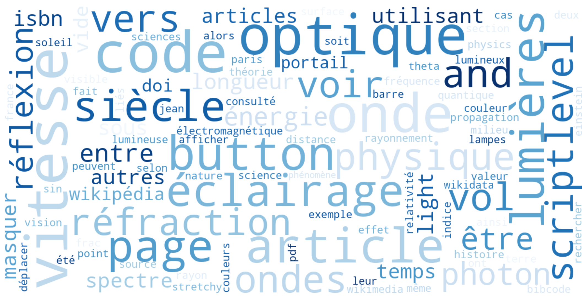

Corpus francophone — 10 pages Wikipedia aspirées
Récapitulatif des pages aspirées : code HTTP, encodage, nombre de mots et occurrences du mot cible par page.
Visualisation des mots les plus fréquents dans le corpus français, après suppression des mots vides et du mot cible lumière.

Chaque occurrence de lumière dans le corpus, avec 5 tokens de contexte gauche et droit. Format KWiC (KeyWord In Context).
Mots apparaissant le plus fréquemment dans un voisinage de ±5 tokens autour de lumière.
Top 30 des paires de mots consécutifs dans le corpus français, mots vides exclus.